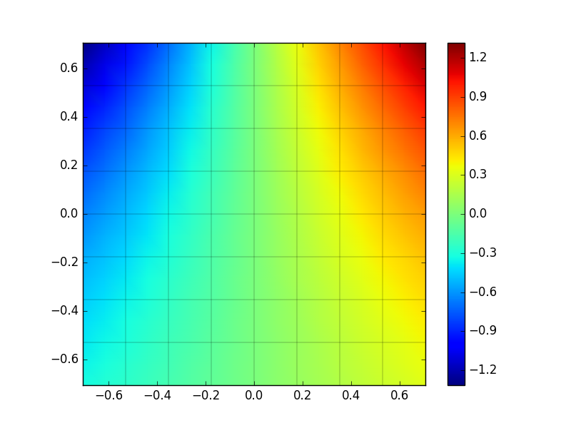
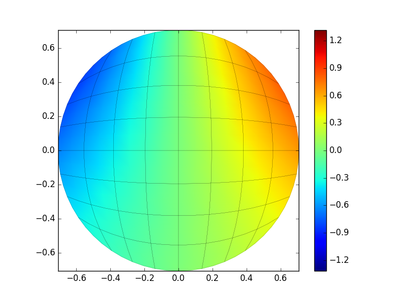
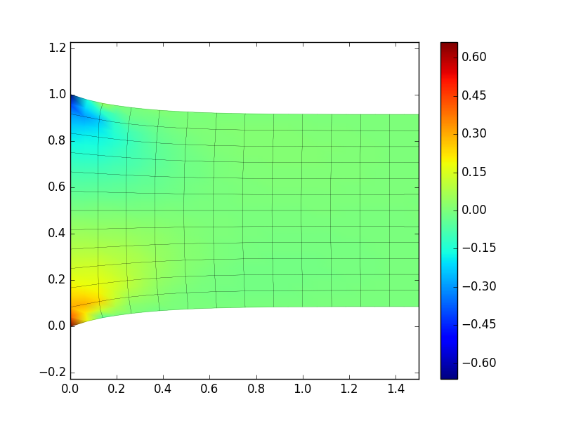
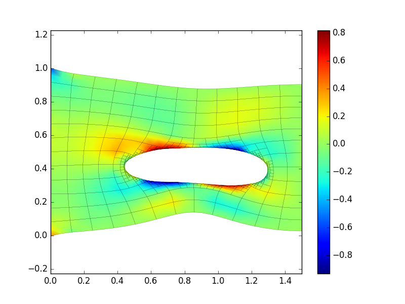

Nutils by example
Nutils is a python based finite element package. Nutils does not come with a GUI. You have to write a python script yourself. Nutils provides a set of tools help you implement a weak formulation quite easily.
Some basic understanding of python is useful. If you are unfamiliar with python you might want to browser through a tutorial.
All mathematical equations in this document are written using the Einstein Notation. All indices of vectors, matrices or higher-dimensional arrays are explicitly listed. The following special cases apply:
Indices following a comma denote derivatives: is equivalent to
Repeated indices in a term are summed: is equivalent to
Consider the following system (Laplace's equation with homogeneous Neumann boundary conditions): with the outward normal and domain . Note that this system is singular.
Let a basis on domain . A weak formulation of this system reads:
Find such that for all
The solution is then approximated by , i.e. the dot product of the basis with vector .
Let be a structured partition of equally sized elements of and a linear basis on . The following Nutils script implements the weak formulation and finds a solution:
3 from nutils import *
4
5 # construct topology, geometry and basis
6 verts = numpy.linspace(-0.5**0.5, 0.5**0.5, 9)
7 domain, geom = mesh.rectilinear([verts, verts])
8 basis = domain.basis('spline', degree=1)
9
10 # construct matrix
11 A = domain.integrate(
12 basis['i,k'] * basis['j,k'],
13 geometry=geom, ischeme='gauss3')
14
15 # solve linear system
16 w = A.solve()
In this script the line
from nutils import *
loads the python package nutils. This line is mandatory for all nutils
scripts. See the python docs for more information on
importing packages.
With the line
domain, geom = mesh.rectilinear([verts, verts])
we create a structured two-dimensional mesh. The argument [verts, verts] of
function mesh.rectilinear specifies the vertices of the mesh per dimension,
i.e. verts in the first dimension and also verts in the second dimension.
mesh.rectilinear([verts]) would create a one-dimensional mesh and
mesh.rectilinear([verts, verts, verts]) a three-dimensional structured mesh.
The variable verts contains a list of vertices, e.g. [0, 0.25, 0.5, 0.75,
1]. The function numpy.linspace creates a list of equally spaced numbers
between two end points, e.g. numpy.linspace(0, 1, 5) returns [0, 0.25, 0.5
0.75, 1]. The first two arguments describe the two end points, the third
argument the number of points. The number of elements corresponding to a list
of vertices is always the number of vertices minus one.
The function mesh.rectilinear returns a topology and a geometry object, in
the example respectively stored in variables domain and geom. The topology
object contains information about the elements and the connectivity between the
elements, but no geometric information. The geometry object is a Nutils
function that connects a topological coordinate to a geometric coordinate. To
illustrate the difference the following example generates the same
one-dimensional topology twice, but with different geometry functions:
verts1 = [0, 1, 2, 3, 4]
domain1, geom1 = mesh.rectilinear([verts1])
verts2 = [0, 0.25, 0.5, 0.75, 1]
domain2, geom2 = mesh.rectilinear([verts2])
With
basis = domain.basis('spline', degree=1)
a linear basis is created on topology domain and stored in variable basis.
The first argument to domain.basis specifies the type of the basis, e.g.
'spline' for a spline basis or 'discont' for a basis suitable for
discontinuous Galerking FEM. The second argument specifies the degree of the
basis.
The Nutils function basis, like geom, can be 'evaluated' on the topology,
and returns a vector of length , where is the number of basis
functions. In the example script there are 91 basis functions, one per vertex
if the basis is linear. The function attribute shape returns the shape of a
function. For example basis.shape returns (91,) and geom.shape (2,).
Every topology object has an integrate method that can integrate an integrand
(first argument) using a numerical scheme specified by the keyword argument
ischeme on a certain geometry specified by the keyword argument geometry.
The following python code evaluates the integral
A = domain.integrate(
basis['i,k'] * basis['j,k'],
geometry=geom, ischeme='gauss3')
The integrate method generates a sparse matrix if the integrand has two
dimensions, i.e. two indices. An integrand with only one index will result in
a vector.
The shape of the sparse matrix A is equal to the shape of the integrand. In
this example A.shape equals (basis['i,k'] * basis['j,k']).shape equals
(91, 91).
A sparse matrix has a solve method that solves linear problems of the form A
x = b, where A is the sparse matrix and b is the right hand side. Passing
the right hand side as the first argument to solve, e.g. A.solve(b) yields
the solution x. By default a sparse direct solver is used to solve the
linear system. If the keyword argument tol is supplied, e.g. A.solve(b,
tol=1e-8) the linear system is solved using GMRES. If the keyword argument
symmetric=True is supplied, the linear system is solved using CG. Note that
it is your responsibility to ensure the matrix is symmetric positive definite.
If the keyword argument precon='spilu' is supplied the iterative solver is
preconditioned with ILU. By omitting the first (positional) argument the right
hand side is assumed to be zero.
Instead of using Nutils' sparse matrix class, you can extract a scipy sparse
matrix object by calling the matrix method toscipy():
B = A.toscipy()
We replace the homogeneous Neumann boundary conditions with Dirichlet boundary conditions: with function given by This system is not singular. Note that the solution to this problem is .
A weak formulation of this system reads:
Find such that for all for which has no support on the boundary and such that for all for which has support on the boundary
The solution is again approximated by . Note that Equation is an -projection of onto basis limited to the boundary .
Again, let be a structured partition of equally sized elements of and a linear basis on . The following Nutils script implements the weak formulation and finds a solution:
3 from nutils import *
4
5 # construct topology, geometry and basis
6 verts = numpy.linspace(-0.5**0.5, 0.5**0.5, 9)
7 domain, geom = mesh.rectilinear([verts, verts])
8 basis = domain.basis('spline', degree=1)
9
10 # construct matrix
11 A = domain.integrate(
12 basis['i,k'] * basis['j,k'],
13 geometry=geom, ischeme='gauss3')
14
15 x0, x1 = geom
16 f = function.sin(x0) * function.exp(x1)
17
18 # construct dirichlet boundary constraints
19 cons = domain.boundary.project(
20 f, onto=basis, geometry=geom, ischeme='gauss3')
21
22 # solve linear system
23 w = A.solve(constrain=cons)
We explain the differences with the previous script. We create a function f
by calling function.sin on the first component of the two-dimensional
geometry and function.exp on the second component:
x0, x1 = geom
f = function.sin(x0) * function.exp(x1)
The statement x0, x1 = geom unpacks the two components of the function
geom.
The dirichlet constraint is applied in the following two statements:
cons = domain.boundary.project(
f, onto=basis, geometry=geom, ischeme='gauss3')
w = A.solve(constrain=cons)
The first statement projects the function f onto basis limited to the
boundary of domain. The domain.boundary is actually another topology
object, which supports the integrate and project methods. The result
vector cons contains values for all basis functions that have support on
domain.boundary, otherwise float('nan').
The method solve of a Nutils matrix supports an additional keyword argument
constrain. If supplied, all values, i.e. those that are not float('nan'),
are copied to the solution vector and the remainder is solved.
To illustrate what happens, consider the linear system and let be an index belonging to the unconstrained set and to the constrained set and let be the vector of constrains. Let be the solution to the constrained problem. Then we have and
Note that !
Nutils creates html log files of your simulations. By default the logs are
stored in the folder public_html in your home directory. The file log.html
in this directory points to the latest simulation.
The following script models the same problem as discussed above, but supports log files:
3 from nutils import *
4
5 def main(nelems=8, degree=1):
6
7 # construct topology, geometry and basis
8 verts = numpy.linspace(-0.5**0.5, 0.5**0.5, nelems+1)
9 domain, geom = mesh.rectilinear([verts, verts])
10 basis = domain.basis('spline', degree=degree)
11 ischeme = 'gauss3'
12
13 # construct matrix
14 A = domain.integrate(
15 basis['i,k'] * basis['j,k'],
16 geometry=geom, ischeme=ischeme)
17
18 x0, x1 = geom
19 f = function.sin(x0) * function.exp(x1)
20
21 # construct dirichlet boundary constraints
22 cons = domain.boundary.project(
23 f, onto=basis, geometry=geom, ischeme=ischeme)
24
25 # solve linear system
26 w = A.solve(constrain=cons)
27
28 # construct solution
29 u = basis.dot(w)
30
31 # plot
32 points, colors = domain.elem_eval(
33 [geom, u], ischeme='bezier3', separate=True)
34 with plot.PyPlot('solution') as plt:
35 plt.mesh(points, colors)
36 plt.colorbar()
37
38 if __name__ == '__main__':
39 util.run(main)
The log of this simulation: laplace_dirichlet.py.
The solution:
We explain the differences with the previous script. All statements of the
previous script excluding the import statement are put into the function
main:
def main(nelems=8, degree=1):
... # contents previous script plus plotting
if __name__ == '__main__':
util.run(main)
You can run this script by typing
python3 laplace_dirichlet.py
in a shell. The arguments nelems and degree can be specified on the
command line, e.g.
python3 laplace_dirichlet.py --nelems=16 --degree=2
runs the script with variables nelems set to 16 and degree to 2.
The statement
u = basis.dot(w)
creates a solution function, the equivalent of where is the basis.
The function domain.elem_eval evaluates Nutils functions specified via the
first (positional) argument at several points on the topology and the function
plt.mesh plots the results, where the first argument defines a position and
the second a colour value.
We partially replace the Dirichlet boundary conditions with Neumann boundary conditions: with the left and bottom side of and the top and right side of . Note that the solution to this problem is , the same as for the problem with purely Dirichlet boundary conditions.
A weak formulation of this system reads:
Find such that for all for which has no support on and such that for all for which has support on
Again, let be a structured partition of equally sized elements of and a linear basis on . The following snippet shows the differences between the script for purely Dirichlet boundary conditions with the present case:
21 # construct dirichlet boundary constraints
22 cons = domain.boundary['left,bottom'].project(
23 f, onto=basis, geometry=geom, ischeme=ischeme)
24
25 # construct right hand side
26 n = geom.normal()
27 b = domain.boundary['right,top'].integrate(
28 basis['i'] * f[',k'] * n['k'],
29 geometry=geom, ischeme=ischeme)
30
31 # solve linear system
32 w = A.solve(b, constrain=cons)
The log of this simulation: laplace_mixed.py.
The solution:

Since we are applying Dirichlet boundary conditions only on the left and bottom
side of the domain, we have updated the projection of f as follows:
# construct dirichlet boundary constraints
cons = domain.boundary['left,bottom'].project(
f, onto=basis, geometry=geom, ischeme=ischeme)
The expression domain['left,bottom'] generates a subtopology of the boundary
of domain limited to the left and bottom side.
The Neumann boundary condition, the left hand side of is implemented as follows:
# construct right hand side
n = geom.normal()
b = domain.boundary['right,top'].integrate(
basis['i'] * f[',k'] * n['k'],
geometry=geom, ischeme=ischeme)
The function geom.normal() returns a Nutils function that represents the
normal of the geometry at a domain or element boundary.
So far we have been using square domains. The strict separation between topology and geometry might have looked unnecessarily complex. However, it allows us to generate a different geometry on a structured topology quite easily. For the sake of argument let's apply the same problem with mixed boundary conditions on a circular domain:
We can create a mapping by
In the Nutils script the only difference with the previous script is the
definitions of the geometry. We create a structured topology and geometry as
before and redefine geom using :
9 domain, geom = mesh.rectilinear([verts, verts])
10 geom = function.stack([
11 function.sin(geom[0]) * function.cos(geom[1]),
12 function.cos(geom[0]) * function.sin(geom[1]),
13 ])
The log of this simulation: laplace_mixed_circle.py.
The solution:

Next, we consider the unsteady heat equation with homogeneous Dirichlet boundary conditions: with domain , a scalar and the following level set function: with and The level set function describes a square centred at and function a circle with radius centred at . The hyperbolic tangent is used to generated a smoothed heaviside of the level set , with smoothness controlled by parameter .
A weak formulation of this system with the Crank–Nicolson method applied for the temporal part reads:
Let matrix be given by and by Given the solution at time step , , find such that for all for which has no support on the boundary and such that for all for which has support on the boundary
Note that matrices and do not depend on the time step .
Let be a structured partition of equally sized elements of and a second order basis on . The following Nutils script implements the weak formulation and finds a solution from to in hundred steps:
3 from nutils import *
4
5 def main(alpha=0.01, nelems=64, degree=2, dt=0.01, tend=1):
6
7 # construct topology, geometry and basis
8 verts = numpy.linspace(0, 1, nelems+1)
9 domain, geom = mesh.rectilinear([verts, verts])
10 basis = domain.basis('spline', degree=degree)
11 ischeme = 'gauss4'
12
13 # construct matrices
14 A = 1/dt * basis['i'] * basis['j'] \
15 + alpha / 2 * basis['i,k'] * basis['j,k']
16 B = 1/dt * basis['i'] * basis['j'] \
17 - alpha / 2 * basis['i,k'] * basis['j,k']
18 A, B = domain.integrate(
19 [A, B], geometry=geom, ischeme=ischeme)
20
21 # construct dirichlet boundary constraints
22 cons = domain.boundary.project(
23 0, onto=basis, geometry=geom, ischeme=ischeme)
24
25 # construct initial condition
26 x0, x1 = geom
27 l = function.max(
28 # level set of a square centred at (0.3,0.4)
29 0.15 - (abs(0.3 - x0) + abs(0.4 - x1)),
30 # level set of a circle centred at (0.7,0.6)
31 0.15 - ((0.7 - x0)**2 + (0.6 - x1)**2)**0.5,
32 )
33 # smooth heaviside of level set
34 u0 = 0.5 + 0.5*function.tanh(nelems/2*l)
35
36 for n in log.range('timestep', round(tend/dt) + 1):
37
38 if n == 0:
39 # project initial condition on `basis`
40 w = domain.project(
41 u0, onto=basis, geometry=geom,
42 ischeme=ischeme)
43 else:
44 # time step
45 w = A.solve(B.matvec(w), constrain=cons)
46
47 # construct solution
48 u = basis.dot(w)
49
50 # plot
51 points, colors = domain.elem_eval(
52 [geom, u], ischeme='bezier3', separate=True)
53 with plot.PyPlot('temperature') as plt:
54 plt.title('t={:5.2f}'.format(n*dt))
55 plt.mesh(points, colors)
56 plt.colorbar()
57 plt.clim(0, 1)
58
59 if __name__ == '__main__':
60 util.run(main)
The log of this simulation: heat.py.
The solution:
All examples given above are scalar. We end with an example of the vector-valued steady linear elasticity equations: with the undisplaced domain , a displacement, the stress given by and the strain by The displaced domain is given by The left boundary condition constrains the displacement to zero, the right boundary condition constrains only the horizontal displacement to , i.e. the plate is stretched horizontally by .
Let a basis on domain and let be . A weak formulation of system reads:
Find such that for all for which and have no support on and has no support on such that for all for which or has support on and such that for all for which has support on
The Nutils equivalent:
3 from nutils import *
4
5 def main(nelems=12, stress=library.Hooke(lmbda=1,mu=1), degree=2):
6
7 # construct topology, geometry and basis
8 verts = numpy.linspace(0, 1, nelems+1)
9 domain, geom = mesh.rectilinear([verts,verts])
10 dbasis = domain.basis('spline', degree=degree).vector(2)
11 ischeme = 'gauss2'
12
13 # construct matrix
14 A = domain.integrate(
15 dbasis['ik,l']*stress(dbasis.symgrad(geom))['jkl'],
16 geometry=geom, ischeme=ischeme)
17
18 # construct dirichlet boundary constraints
19 cons = \
20 domain.boundary['left'].project(
21 0.0, geometry=geom,
22 onto=dbasis, ischeme=ischeme) \
23 | domain.boundary['right'].project(
24 0.5, geometry=geom,
25 onto=dbasis.dotnorm(geom), ischeme=ischeme)
26
27 # solve system
28 w = A.solve(constrain=cons)
29
30 # construct solution function
31 disp = dbasis.dot(w)
32
33 # plot solution
34 points, colors = domain.elem_eval(
35 [geom+disp, stress(disp.symgrad(geom))[0,1]],
36 ischeme='bezier3', separate=True)
37 with plot.PyPlot('stress') as plt:
38 plt.mesh(points, colors, tight=False)
39 plt.colorbar()
40
41 util.run(main)
The log of this simulation: linear_elasticity.py.

In order to create a vector basis you can use the vector method of a scalar
basis:
dbasis = domain.basis('spline', degree=degree).vector(2)
The single argument to vector defines the length if the vector. The resuling
basis has two axes: a dofs axis of size and an axis of size , where
is the length of the scalar basis and is the vector length.
Multiple constraints can be 'combined' with the or operator |:
cons = cons1 | cons2 | cons3
You should make sure that the separate constraints do not overlap!
Finally, we apply the linear elasticity problem defined above on a unit square domain with a hole centred at with radius . In Nutils we can create a mesh for this domain be 'trimming' a structured mesh based on a level set:
7 # construct topology, geometry and basis
8 verts = numpy.linspace(0, 1, nelems+1)
9 domain, geom = mesh.rectilinear([verts,verts])
10
11 # cut a hole with radius .2
12 levelset = function.norm2(geom - (.6,.4)) - .2
13 domain = domain.trim(levelset, maxrefine=3)
14
15 dbasis = domain.basis('spline', degree=degree).vector(2)
The method trim of a topology takes a level set as first argument and a
maximum refinement level as second argument. The trim method subdivides
elements where the level set changes sign until the maximum level of refinement
is reached and removes elements where the level set is negative. Creating a
basis on a trimmed topology will actually create a basis on the original,
untrimmed topology.
The log of this simulation: linear_elasticity_with_hole.py.
The solution:

The following video further illustrates the trim method. The video shows the stress in a bone fragment when the fragment is stretched vertically, modelled by linear elasticity.
Publication: C.V. Verhoosel, G.J. van Zwieten, B. van Rietbergen, R. de Borst, Image-based goal-oriented adaptive isogeometric analysis with application to the micro-mechanical modeling of trabecular bone, Computational Methods in Applied Mechanical Engineering 284: 138–164, 2015, doi: 10.1016/j.cma.2014.07.009.
Nutils requires python3 (version 3.3 or higher) with modules 'numpy', 'scipy' and 'matplotlib'. If this is already installed on your computer together with 'pip', you can install nutils by running
pip3 install --user https://github.com/nutils/nutils/archive/master.zip
If not, see the platform specific installation instructions below.
Python source files can be edited using any (source code) editor, but you might want to consider Spyder. The installation instructions below include Spyder.
Open a terminal and run
wget https://repo.continuum.io/miniconda/Miniconda3-latest-Linux-x86_64.sh
bash Miniconda3-latest-Linux-x86_64.sh -b -f -p "$HOME/miniconda3"
export PATH="$HOME/miniconda3/bin:$PATH"
echo '# add conda to PATH' >> "$HOME/.bashrc"
echo 'export PATH="$HOME/miniconda3/bin:$PATH"' >> "$HOME/.bashrc"
conda install -y pip numpy scipy matplotlib spyder
pip install https://github.com/nutils/nutils/archive/master.zip
Open a terminal and run
wget https://repo.continuum.io/miniconda/Miniconda3-latest-MacOSX-x86_64.sh
bash Miniconda3-latest-MacOSX-x86_64.sh -b -f -p "$HOME/miniconda3"
export PATH="$HOME/miniconda3/bin:$PATH"
echo '# add conda to PATH' >> "$HOME/.bashrc"
echo 'export PATH="$HOME/miniconda3/bin:$PATH"' >> "$HOME/.bashrc"
conda install -y pip numpy scipy matplotlib spyder
pip install https://github.com/nutils/nutils/archive/master.zip
Install WinPython 3.4 or 3.5. Open a WinPython command prompt and run
pip install https://github.com/nutils/nutils/archive/master.zip
You might want to register WinPython to Windows.
All the examples in this document can be found in the nutils-by-example repository (zip-file).